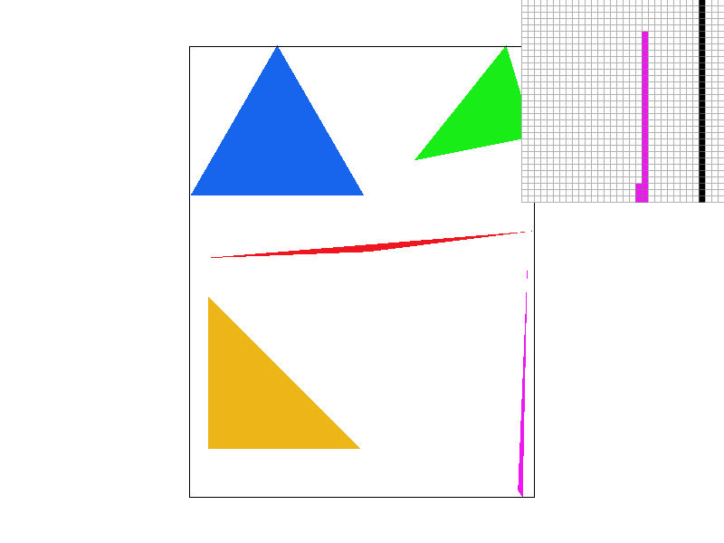
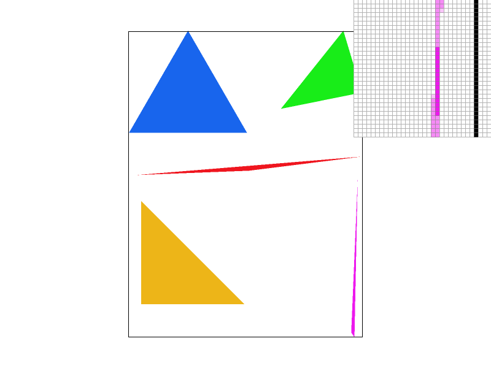
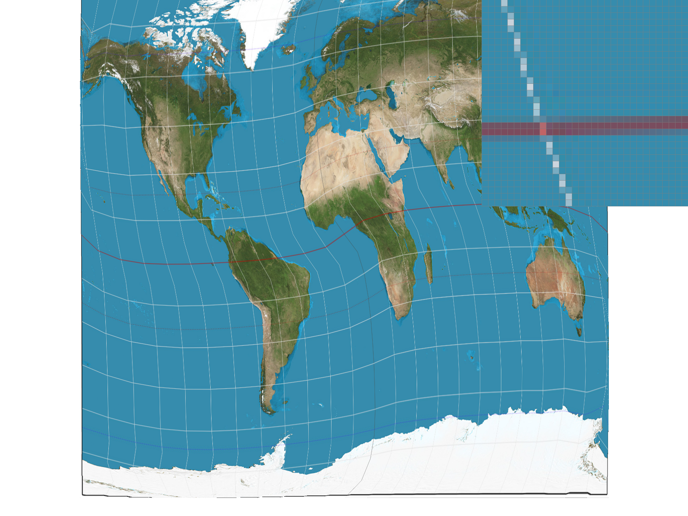
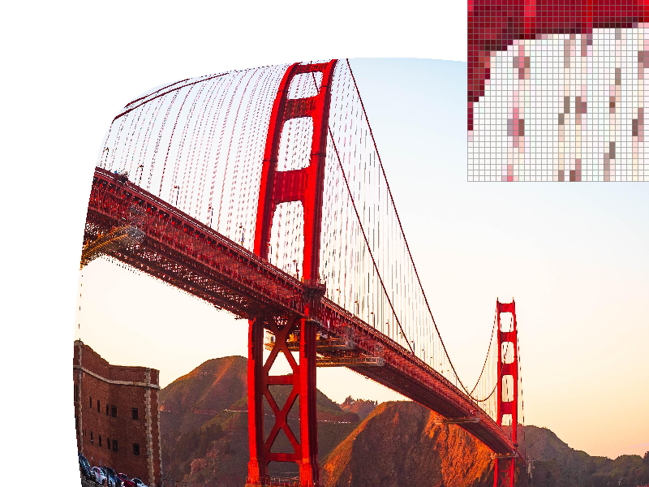
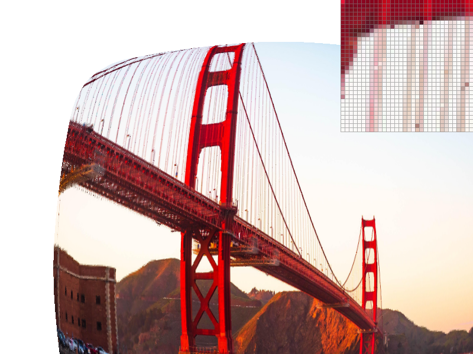

Overview
In this project, I make a rasterizer that features supersampling and texture mapping (pixel sampling and mipmapping). I learned about the various ways in which we can antialias images to produce the smooth, nice-looking visuals we're used to today. For instance, supersampling is a clever way to make lines appear less jagged.
Section I: Rasterization
Part 1: Rasterizing single-color triangles
To rasterize the triangle, we iterate through all points within the bounding box of the triangle and color the corresponding pixel if the point is located within the triangle. We use the inside function provided to detect if a point is contained within the triangle.
Since we cannot assume that the points are given to us in counterclockwise order, we invert the ordering of the vertices passed to inside if the cross product between two edges is negative.
Part 2: Antialiasing triangles
Supersampling is useful to remove aliasing in our images. In task 1, we saw how our triangles had "jaggies" that looked odd. Supersampling smoothens the appearance of sharp edges.
Our supersampling approach is to project the sampling buffer to a higher resolution, then downsample to a lower resolution in the final resolve_to_framebuffer step.
We maintain the same data structures, but when choosing a new sampling rate, we add a multiplier of sample_rate to the dimension size.
(x, y) in screen space is mapped to (x * sqrt(sample_rate) + i, y * sqrt(sample_rate) + j), where i and j vary from 0 to sqrt(sample_rate).
Drawn visually, this mapping ties a pixel value with a rectangular patch in the higher resolution sample buffer. When rasterizing the triangle, we will convert the triangle coordinates
to this higher resolution and conduct the same point-in-triangle tests from task 1. Then, when resolving the frame buffer, we will average together the color pixels from the "patch" in the sample buffer
for each pixel coordinate in screen space. Note that for rasterizing points and lines, we will shade the entire higher res "patch" for a point all in the given color so when the downsampling process happens,
the point does not look lighter.
|

|

|
|
|
|
As the sampling rate goes up, skinny edges like the one shown here will become smoother because nearby pixels will be shaded lightly in the pink color from supersampling. Note that performance will also go down because our sample buffer has to multiply in size with the sampling rate.
Part 3: Transforms
To recreate the transforms, we use the matrices shown in lecture: https://cs184.eecs.berkeley.edu/sp24/lecture/4-26/transforms. Here is an example of a person stretching his leg.
Section II: Sampling
Part 4: Barycentric coordinates
Barycentric coordinates are a way of representing a position in space relative to triangle vertices. Mathematically, we use alpha, beta, and gamma where (x, y) = alpha * A + beta * B + gamma * C and alpha + beta + gamma = 1. Any point in the triangle can be represented with alpha, beta, and gamma between 0 - 1, and we can use these as coefficients to sum up percentages of the vertex colors. As a result, barycentric coordinates give us a convenient way of creating a smooth gradient from one color to the next as shown by the image here.
Part 5: "Pixel sampling" for texture mapping
In the context of texture mapping, pixel sampling is the process of sampling a color from texture space. Given an (x,y) coordinate from screen space, we want to extract a corresponding color from uv space. Based on this mapping, we can essentially fold a texture over a shape in screen space. Two common methods for pixel sampling are nearest neighbor and bilinear interpolation. In nearest neighbor, we return the color of the closest texel to the uv coordinates, and in bilinear interpolation, we interpolate/blend across the four nearest neighbors.
|
|
|
|

|
|
In the above pictures, we can see an example where bilinear interpolation surpasses the performance of nearest neighbor. Since bilinear interpolation "blends" the nearest four neighbors, we get less of the "jaggies" we see in nearest neighbor. Indeed, the interpolation has an effect resembling supersampling without the extra memory overhead - we can see that even in Figure 3 with sampling rate 1, the skinny lines are less jagged.
Part 6: "Level sampling" with mipmaps for texture mapping
Level sampling is the process of determining the right mipmap or resolution level to pixel sample from. Recall that our xy coordinates in
screen space map to uv coordinates in the texture space. If there are a lot of texture changes within a small amount of screen space, we can
get aliasing. So, we'll want to decrease the resolution so that the texture looks smoother. Mipmaps are essentially copies of the texture at
different resolutions, with the higher levels being lower in resolution. To find the right mipmap level, we find the uv coordinates of (x,y),
(x+1, y), and (x, y+1) and find the maximum rate of change with respect to x and y.
Note that if (x+1, y) or (x,y+1) are outside the triangle, we just use (x,y) instead; also, we cap the mipmap levels appropriately from 0 to their max.
Given the calculated depth, we apply the pixel sampling method either with (1) the nearest level or (2) a weighted sum between the two adjacent mipmap
levels.
Let us now compare our pixel sampling, level sampling, and supersampling methods. Supersampling reduces aliasing in the image and produces smoother curves but incurs a higher memory overhead and slower performance. Pixel sampling impacts performance due to additional computations (ex. for the calculating barycentric coordinates) but does not have a memory overhead. Bilinear pixel sampling will also reduce aliasing similar to supersampling (although more inexactly). Level sampling is a cost-effective way to reduce aliasing in specifically high-frequency patches without incurring the memory and performance overhead from supersampling.
|

|
|
|
|

|
Figure 1 shows massive aliasing with the bridge lines. As shown here, the bilinear pixel sampling and mipmapping have a huge difference in the resulting image. The bilinear interpolation smooths out all the thin bridge lines. We can think of mipmapping as more precise and targeted, reducing the resolution level of high-frequency texture patches. For reference, here is the original image of the bridge.